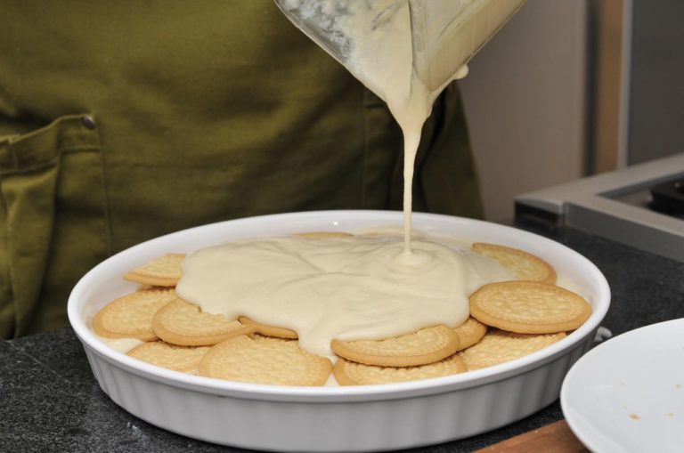

Receta Facíl de Pay de Limón
- Lo primero que tienes que hacer es colar el jugo de limón para que quede completamente libre de semillas.
- Tendrás que licuar el limón con la leche condensada y evaporada, hasta obtener una pasta que será una de las bases con las que vas a crear el postre.
- En el refractario pondrás una capa de galletas enteras, seguida de una capa de la pasta, procurando no dejar huecos entre ambas y repitiendo el proceso hasta llenarlo.
- La última capa, que debe ser con la pasta, la puedes decorar con ralladura de limón o trozos de galleta enteros y un toque de canela.
- Finalmente tapas el refractario con papel aluminio y lo dejas enfriar durante 3 horas en el refrí para que esté listo para disfrutar.
- Disfruta
